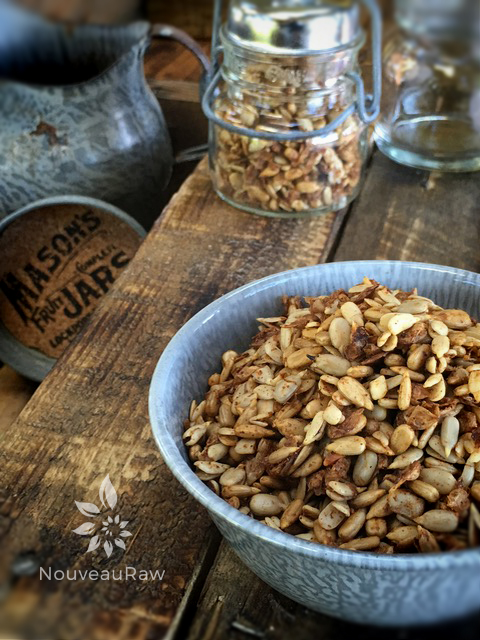

Maple Cinnamon Sunflower Seeds
A dear friend of ours shared with me not too long ago that he loved sunflower seeds. I made a mental note and couldn’t wait to get in the kitchen to make him a healthy creation of one of his favorite foods.
I have one of those brains that love a challenge, well I guess you can call it a challenge. Over the years when I would hear a person say, “Oh, hey, can you keep your eyes open for a ……?” I turned into a hound dog, constantly looking for that “scent.” It’s kinda weird because I remember stuff like this but ask me what I ate for dinner two days ago, and I would go blank.
One time I had a girlfriend who told me that her grandfather loved roasters. But she was looking for a particular statue of a rooster. It took me two years to find it, but I did.
You see every time I went shopping, in the back of my mind, I was always looking for that particular roaster. After I had found it, I called her. I was so excited. She started to giggle and then burst my bubble by letting me know that she had found one on eBay one year ago. “why didn’t you tell me to stop looking?!! You know my brain!” lol
Gosh, I am not sure why I got off on that story… oh yea… I shared all this just to say that once I learned that David loved sunflower seeds… I knew that this was going to be an easy task that wouldn’t haunt me for months or years. The only thing I had to do was create a recipe. So, if you know a sunflower seed lover, this would make an excellent gift for them or even for yourself. It is o.k. to make treats for yourself too. Hehe Enjoy, many blessings, amie sue
Preparation:
- After soaking the sunflower seeds, discard and drain the water, giving them a quick rinse with water.
- In a medium-sized bowl, combine the chia seeds, cinnamon, mesquite powder, and salt.
- Add the seeds, sweetener, and vanilla. Stir until the seeds are well coated.
- Spread the mixture on non-stick dehydrator sheets.
- Dehydrate at 145 degrees (F) for 1 hour, then reduce to 115 degrees (F) for 8 hours or until dry.
- The thinner you spread your seed mixture on the dehydrator trays, the quicker they will dehydrate.
- Allow them to cool before you store them in a sealed bag or container at room temperature, fridge, or freezer, for months.
Culinary Explanations:
- Why do I start the dehydrator at 145 degrees (F)? Click (here) to learn the reason behind this.
- When working with fresh ingredients, it is important to taste test as you build a recipe. Learn why (here).
- Don’t own a dehydrator? Learn how to use your oven (here). I do however truly believe that it is a worthwhile investment. Click (here) to learn what I use.

© AmieSue.com